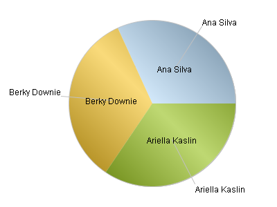
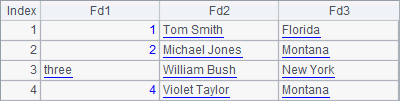

12.11.3 Pie graph
esProc offers pie graph to plot various pie charts. Below is such a plotting algorithm:
|
|
A |
|
1 |
=canvas() |
|
2 |
=demo.query("select * from FRUITS") |
|
3 |
=A1.plot("GraphPie","categories":A2.(NAME),"values": A2.(UNITPRICE),"legendLocation":2) |
|
4 |
=A1.draw@p(400,250) |
A3 plots a single-series pie chart. For multi-series pie chart plotting, data property setting is like that in a column chart/polyline chart with both category and series. This algorithm plots a legend on the right side. A4¡¯s plotting result is:

Modify A3 to set Pie type as 3D pie for plotting a 3D pie chart. And check Cut-slice pie to explode the sector corresponding to the last data category:

Here¡¯s the plotting result:
